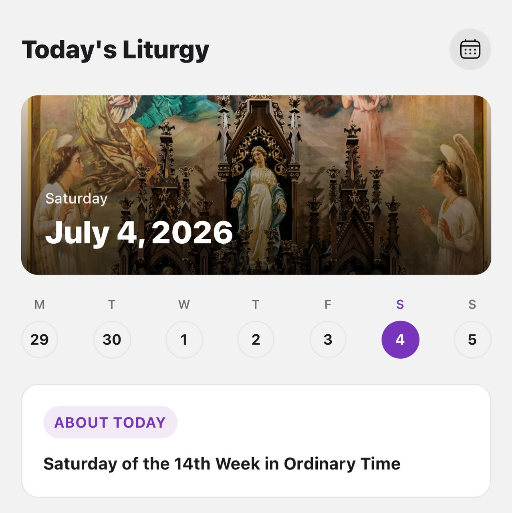

Parishioners
Faith resources, Church information, spiritual support, and community connection.
From a broad digital vision to a focused, research led product
Product Manager & Internal OpsFaith Technology · AI · Administration

01 — The problem
UNUM SINT is a digital platform being developed for the Catholic Diocese of Port Harcourt to create a more connected experience for faith, communication, administration, and community engagement.
When I joined the team, the vision was already ambitious. There were ideas around digitising Church records, improving communication, making Catholic resources more accessible, introducing AI-powered faith assistance, supporting catechesis and youth engagement, and creating a platform that could scale beyond a single diocese.
The opportunity was clear. The challenge was deciding what to build first.
02 — The users
Faith resources, Church information, spiritual support, and community connection.
Pastoral and administrative needs across parish life.
Managing information and communicating with members.
Records, visibility, coordination, and communication across the Diocese.
Learning, engagement, and community participation.
Staying connected regardless of where they live.
This diversity made product prioritisation more complex. A feature valuable to a diocesan administrator was not necessarily the feature that would bring a parishioner back.
03 — What we learned
40+ direct conversations across different parts of the Catholic community.
The ecosystem had users with different responsibilities and expectations.
The vision contained more valid directions than the team could pursue at once.
The first experience needed a clear reason for users to return.
Faith, institutional information, and AI required care beyond interface design.
04 — The product
Digitising and organising sacramental and parish records.
Making Catholic faith guidance more accessible through AI.
A direct channel between the Diocese, parishes, and parishioners.
Making Catholic teaching and learning resources easier to access.
More interactive faith experiences for younger users.
Stronger ways for wider communities to remain connected.
The product strategy was not to abandon these ideas. It was to sequence them.
Core Catholic readings directly within the platform.
A simple way to engage with the day's readings.
A direct channel for important diocesan information.
An AI-powered Catholic faith assistant.
05 — My role
Discovery, research, strategy, roadmaps, prioritisation, mapping, requirements, PRDs, testing, iteration, launches, and documentation.
Team coordination, meetings, task assignment, follow-ups, deadlines, processes, stakeholder coordination, structure, and execution.
06 — Product strategy
March 2026 · Foundation for digitisation.
August 2026 · A focused daily experience.
Catechesis, youth, diaspora, Faith Quest, donations, and community.
07 — The experience
The experience was designed around everyday engagement rather than requiring users to understand the entire ecosystem before they could benefit from it.

08 — Key product decisions
Insight: The vision contained multiple valuable opportunities.
Why: A focused MVP gave the team a clearer product to build, test, and learn from.
Insight: A platform needs a reason for users to return.
Why: Readings, reflections, announcements, and Faith Companion created natural entry points.
Insight: AI introduced questions around trust and appropriate use.
Why: The product should remain useful even without AI.
Insight: The product touched faith, records, personal information, and AI responses.
Why: Privacy, access, security, and auditability are part of the product.
09 — Feature deep dive
A direct way to access the day's Catholic readings within UNUM SINT, reducing the distance between users and a core daily faith experience.

Reflections extend the reading experience beyond consumption and create space to engage with what users have read.

A more direct communication channel between the Diocese and its community.

Integrated through Magisterium AI, the Faith Companion is a support tool, not a replacement for pastoral care, confession, or personal spiritual direction.

10 — From idea to launch
11 — Challenges & trade-offs
Response: Prioritised a focused MVP and sequenced the wider vision.
Response: Created clearer requirements, coordination, and follow-up structures.
Response: Defined boundaries and treated trust mechanisms as part of the product.
12 — Outcome
The most important outcome was creating a clearer path from the wider UNUM SINT vision to something the team could prioritise, build, test, and put in users' hands.
13 — What I learned
Sometimes the PM decides which good idea comes first.
Conversations moved the team from possibility to focus.
Trust must influence decisions from the beginning.
Direction needs alignment, communication, and accountability.
14 — What's next
The next phase should continue to be guided by user behaviour, feedback, adoption, and the needs of the Diocese, rather than simply expanding the feature list.
Reflection
Start with Direction. Create Distinction around the actual problem. Make Deliberate product decisions. Drive Delivery. Keep the Drive to improve.
For me, product management is not just deciding what to build. It is creating enough clarity for people to build the right thing together.